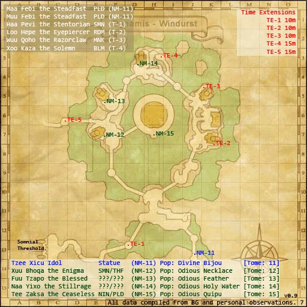

Description
Dynamis - Windurst is a Dynamis area in Dynamis.
Map

Notorious Monsters

Regular Monsters

References
External references describe their own server or retail rules. Documented Zenith changes take precedence.
Map credits: Map 1 — HorizonXI Wiki. Original game maps © SQUARE ENIX; redrawn maps retain the credited authorship and license.

Additional level-75 reference
Yagudo NMs in Dynamis have an additional TP attack:
- Doom: Single target Doom, has a high chance of wearing off if NM is defeated before countdown finishes.
Game Script
 Image source
Image source
Windurst Walls
Iru-Kuiru: Our expedition was supposed to have been an allied effortaru, but not one of us was interested in the fate of the other nations. In our hasty-waste to outdo each other, we failed to see to the heart of the mattaru. Our attitudes led to the death of two of our members, and precipitated the birth of the Shadow Lord... This sin does not belong on Raogrimm's shoulders alone. We all mustaru atone for our actions. Please help him. Help Raogrimm escape from his horrid-worrid darkness, forever this time.
Adapted from Eden Wiki: Dynamis - Windurst · Contributors and history · CC BY-SA 4.0. Revision 8318. Layout, links and optional background text adapted for Zenith.